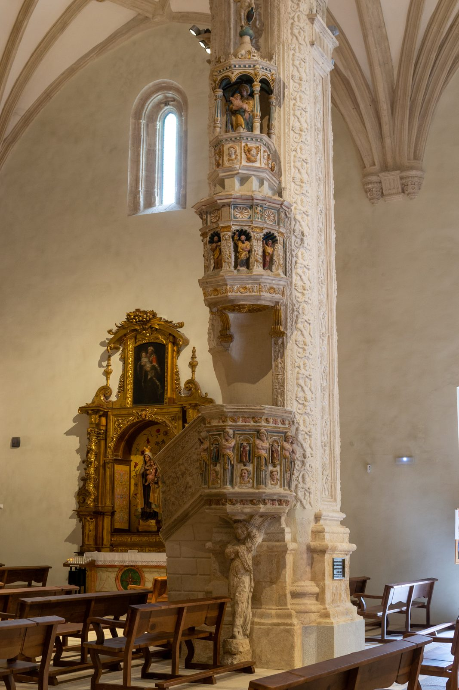
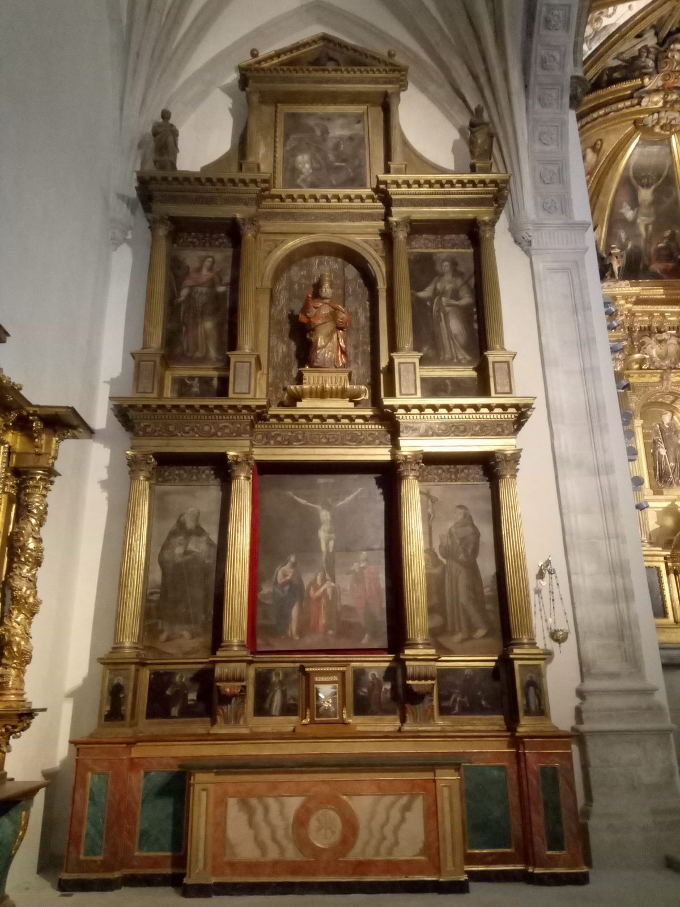

Visita guiada
Parroquia de Santo Domingo de Silos · Pinto
Bienvenidos a la iglesia de Santo Domingo de Silos, la parroquia más antigua de Pinto. Esta visita guiada te ayudará a descubrir la historia y el arte del templo.
La iglesia se levantó a lo largo del siglo XVI y conserva un rico patrimonio de los siglos XVI al XVIII: un púlpito renacentista, un gran retablo mayor del Barroco madrileño y varios retablos laterales con pinturas y tallas de gran interés.
Te proponemos recorrerla en este orden:
- Historia del temploDe la Edad Media a la torre actual

El edificioNaves, bóvedas, pila bautismal y púlpito El retablo mayorObra cumbre del Barroco madrileño (1637-1657)
El retablo mayorObra cumbre del Barroco madrileño (1637-1657)
Retablo de San PedroRetablo colateral izquierdo (1629) Retablo de la InmaculadaRetablo colateral derecho, de Martín Ferrer (1632)
Retablo de la InmaculadaRetablo colateral derecho, de Martín Ferrer (1632) Retablos de la nave izquierdaEncarnación, Cristo atado a la columna y Virgen de los Dolores
Retablos de la nave izquierdaEncarnación, Cristo atado a la columna y Virgen de los Dolores- Retablos de la nave derechaVirgen del Carmen y San José
- Otras obras de arteEl Cristo de la Misericordia y pinturas barrocas
Toca una opción para empezar